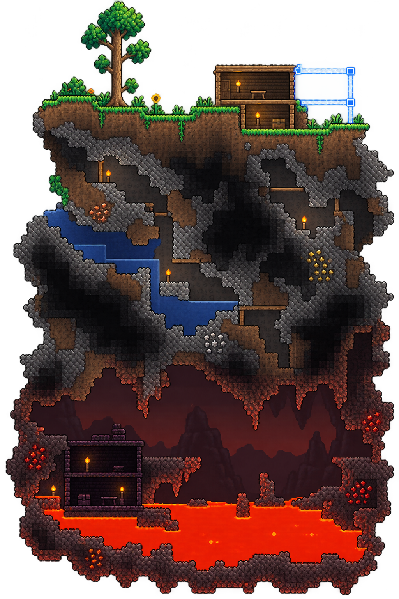
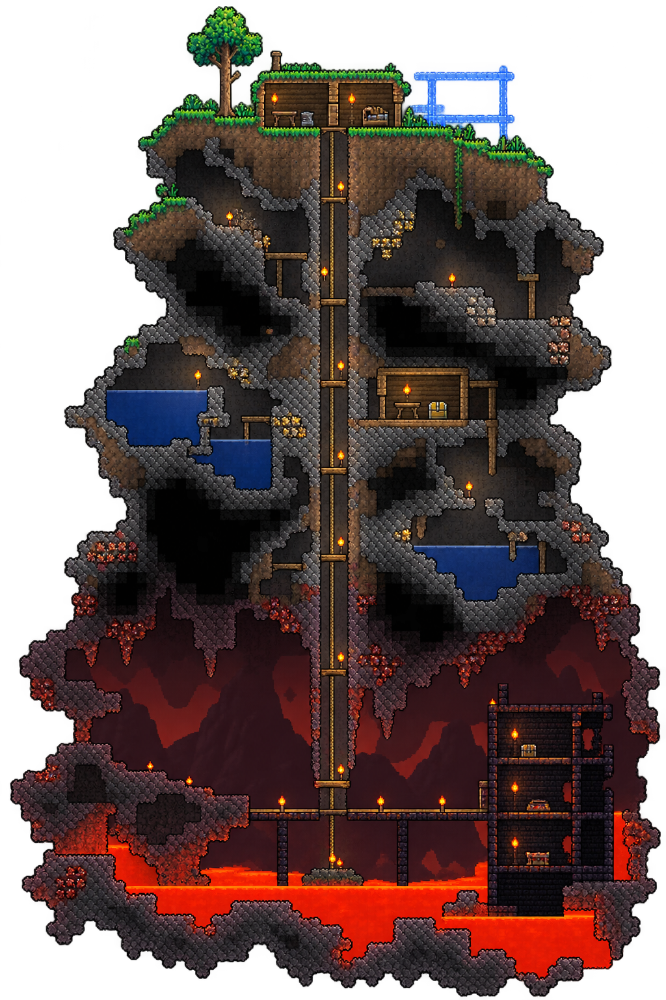
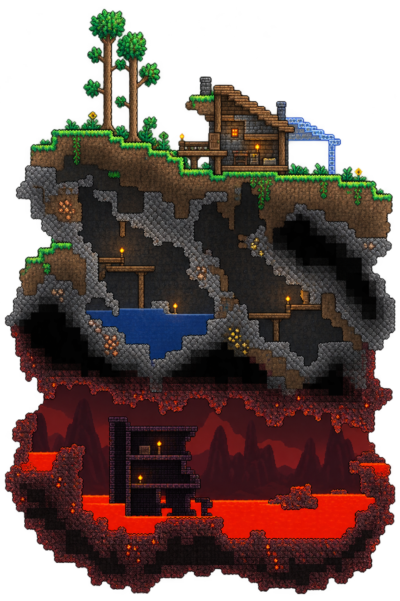
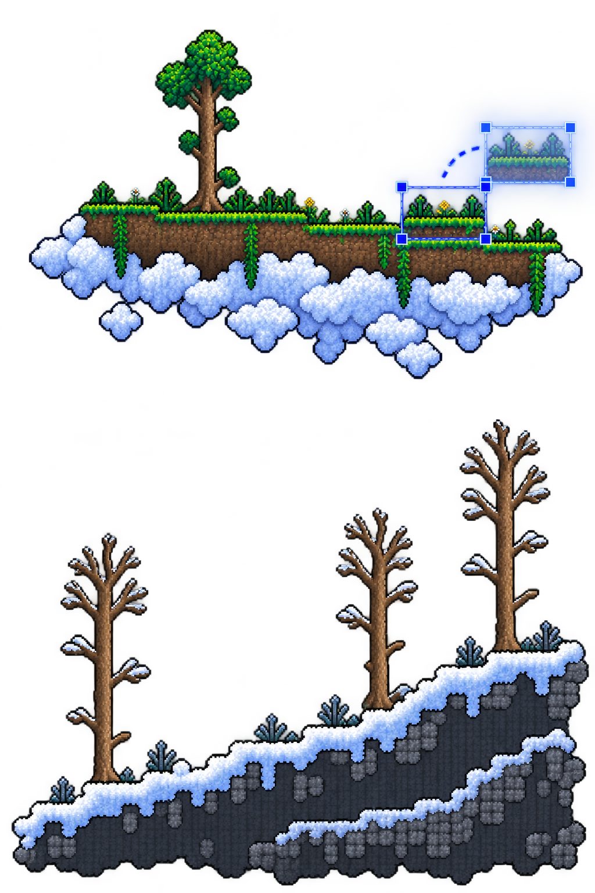

Terraria Map Studio
Artwork pairing preview.
The center represents the world chooser.
B · Hellevator and infrastructure
Original pixel artwork · B selected · right artwork matched to B




Artwork pairing preview.
The center represents the world chooser.
B · Hellevator and infrastructure